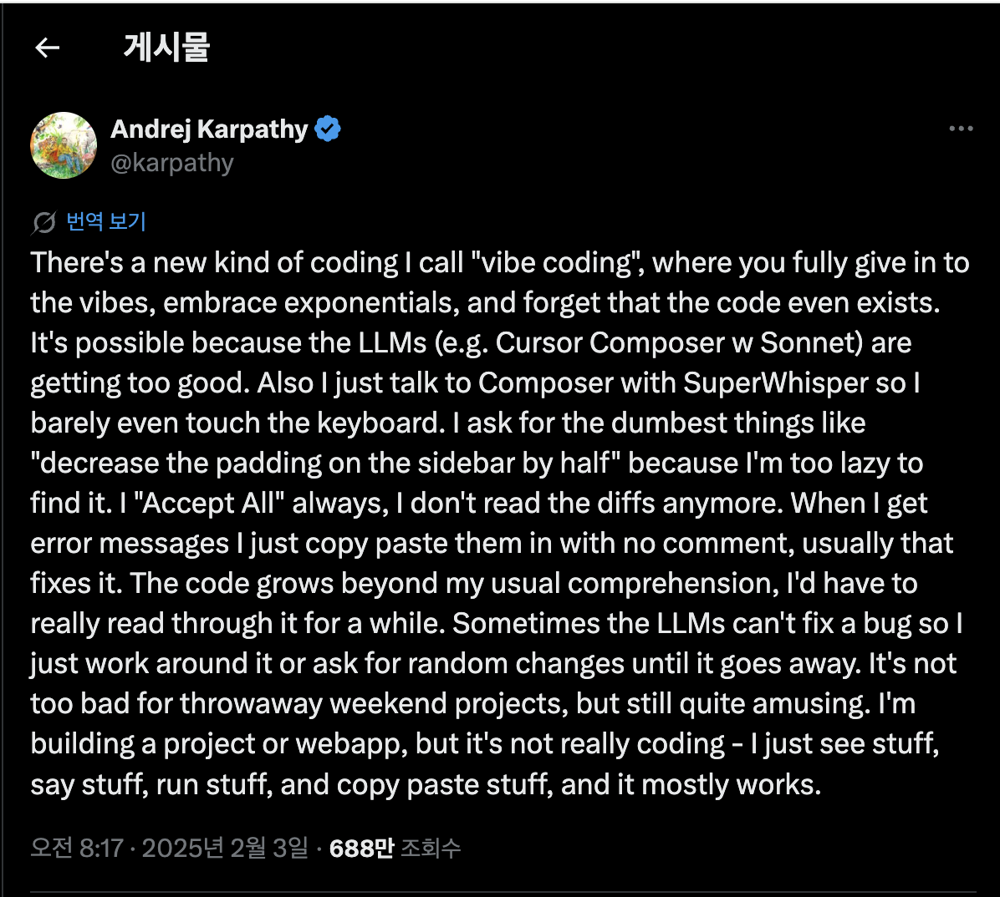

Who said it
Andrej Karpathy
OpenAI / Tesla
2025.02
vibe coding
왜 이 한 문장이 강했나
AI에게 코딩을 맡기는 태도는 이미 최전선 개발자의 실제 작업 방식이 됐습니다.
- 초보자의 편법이 아니라 최전선 개발자의 작업 방식이었습니다.
- 즉, 역할이 직접 코딩에서 설계와 검증으로 이동하기 시작했습니다.
- 저는 그 순간부터 바이브 코딩을 다른 관점으로 보기 시작했습니다.
